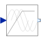

VfControllerVoltage-Frequency-Controller |

|
Information
This information is part of the Modelica Standard Library maintained by the Modelica Association.
This is a simple voltage-frequency-controller. The amplitude of the voltage is linear dependent (VNominal/fNominal) on the frequency (input signal u), but limited by VNominal (nominal RMS voltage per phase). An
m quasi static phasor signal is provided as output signal y, representing complex voltages.
The output voltages may serve as inputs for complex voltage sources with phase input. Symmetrical voltages are assumed.

|
Parameters (5)
| m |
Value: 3 Type: Integer Description: Number of phases |
|---|---|
| orientation |
Value: -Modelica.Electrical.MultiPhase.Functions.symmetricOrientation(m) Type: Angle[m] (rad) Description: Orientation of phases |
| VNominal |
Value: Type: Voltage (V) Description: Nominal RMS voltage per phase |
| fNominal |
Value: Type: Frequency (Hz) Description: Nominal frequency |
| BasePhase |
Value: 0 Type: Angle (rad) Description: Common phase shift |
Outputs (1)
| amplitude |
Type: Voltage (V) |
|---|
Connectors (2)
| y |
Type: ComplexOutput[m] Description: Complex quasi static voltages (RMS) |
|
|---|---|---|
| u |
Type: RealInput Description: Frequency input (Hz) |
Used in Examples (1)
|
Modelica.Magnetic.QuasiStatic.FundamentalWave.Examples.BasicMachines.InductionMachines
Induction machine with squirrel cage and inverter driving a conveyor |